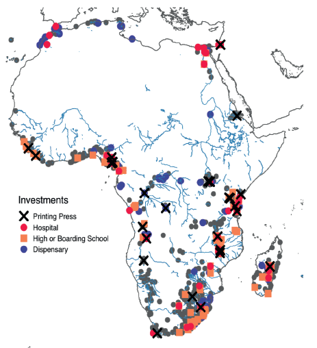
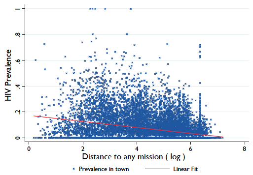
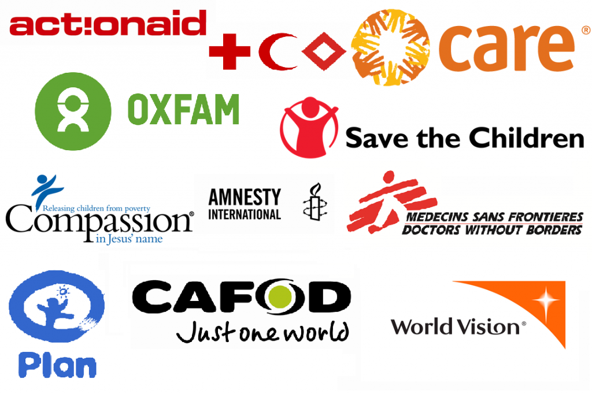
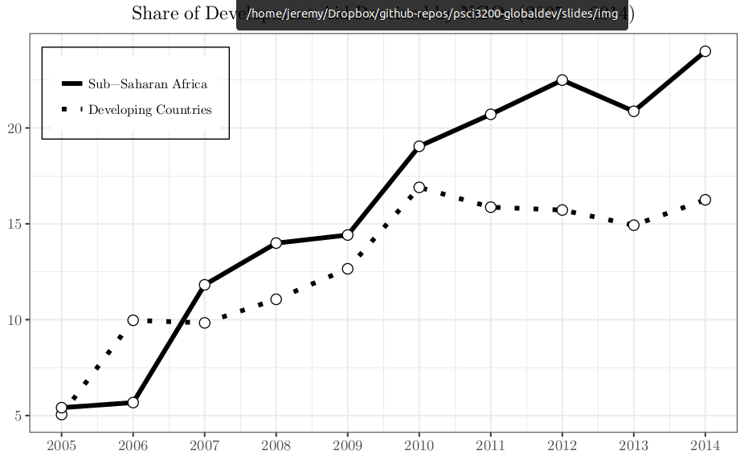
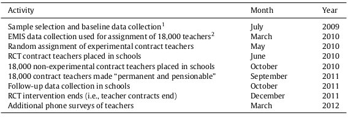
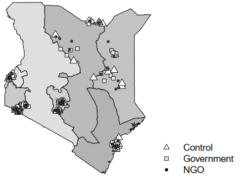
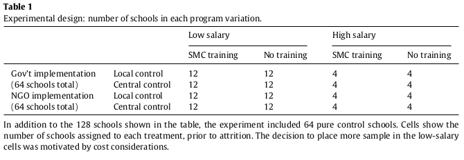
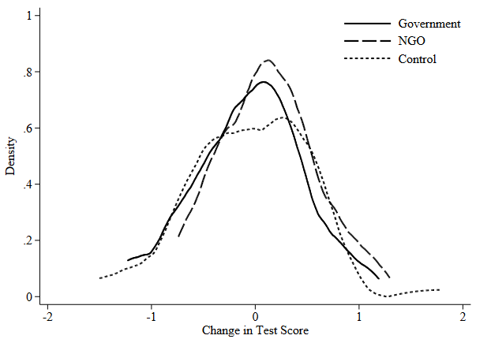
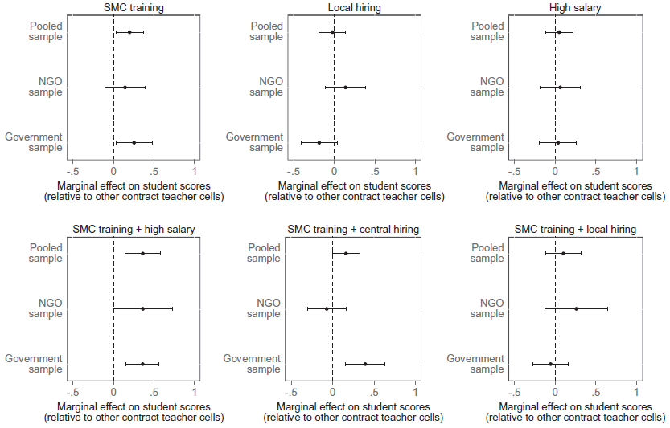

Foreign Aid 2
Final Project Essentials: Fixed Effects
Logistics
Assignments
- Today
- Tuesday (4/9)
- Climate and Development readings
- April 11
- Final project proposal
Agenda
- Cruz (2016)
- Bold et al. (2018)
- Review of Data Assignment 1
Cruz (2016)
Foreign Aid and Accountability
Standard channels for political manipulation
- Distribution of aid: Divert resources from needy to strategically valuable communities (clientelism)
- Reallocation of budgets: Divert resources from development (fungibility)
Foreign Aid and Accountability
Donor strategies to avoid manipulation:
- Project aid
- Channel through NGOs or direct transfers
- Generally cut government actors out of the process
Three Questions
Three questions
- Do citizens perceive foreign aid projects?
- How do politicians claim credit?
- Under what conditions are they successful?
Sources of updating
- Credit for welfare improvement
- More likely to secure future projects
Research Design
- Research question: Can local politicians claim undue credit for the aid projects to boost their re-election prospects
- Allocation of projects: Eligibility determined by poverty threshold
- Least likely design for credit misattribution:
- Low chance for political influence on distribution
- Minimal ability to reallocate budget in response
Undeserved Credit Claiming
- What is undeserved credit claiming?
- Politicians claiming credit for projects they had no role in securing
- Mechanism:
- Exploiting the lack of transparency and information among voters
- Implications:
- Undermines incentives to improve welfare
Findings
- Election impact: 12% increase in re-election chances
- Increased visits: Politicians visited project sites more frequently to appear involved
- Political credit: Mayors are credited for funding or initiating projects even when respondents knew of other funding sources
Policy Implications
- Designing Aid Projects: Importance of transparency and community involvement to minimize undeserved credit claiming
- Voter Education: Enhancing voters’ understanding of aid processes to better hold politicians accountable
- Involvement: Giving opportunities to contribute makes credit deserved
Brief History of Non-State Service Provision
Service Delivery & The State
What do states do? (Hoffman, 2015)
- Monopolize violence
- Levy taxes
- Obtain the assent of the population
Why is public service delivery (PSD) important?
- Promotes economic growth
- Improves welfare of citizens
The Fiscal Exchange
How does this work in social contexts without direct taxation?
- Compliance obtains when people expect that services will be delivered
- Compliance is conditional
Norm-driven social contract emergence
- Tax morale and civic duty
- Compliance is internalized
Historical Service Delivery in Africa
Service delivery in the pre-colonial period
- Pre-colonial African states did not engage in extensive service delivery (Herbst 2000)
- States weren’t geographically bounded
- Christian missions were (kinda) the first service providers
- Emphasis on literacy and formalizing indigenous languages
- Competing with traditional healers (Chirwa 2016)
Historical Service Delivery in Africa
Colonial approaches to service delivery
- Traditional medicine was outlawed (Chirwa 2016)
- The church is “cemented” as the primary service provider (Jennings 2014)
- Tanzania at the end of the colonial period
- Church operated 81% of primary health facilities
- Church-operated schools outnumbered government schools 4-to-1
Historical Service Delivery in Africa

Historical Service Delivery in Africa

Historical Service Delivery in Africa
Post-colonial period
- Post-colonial African states nationalized service delivery infrastructure and increased spending (Bates 1981)
- Kenya’s Civil Services (Young 1988)
- 1945: 14,000; 1955: 45,000; 1978: 170,000
- Commodity boom \(\Rightarrow\) commodity bust
- Structural adjustment: Kenya’s Health Spending (J. Brass 2014)
- 1980: $9.8 million; 1993: 6.2 million; 1996: 3.6 million
The Re-Entry of Non-State Providers
In 2007, 9% and 16% of US economic engagement with developing countries has been Official Development Assistance and private philanthropy respectively (Kapur and Whittle 2009).
The Re-Entry of Non-State Providers

The Re-Entry of Non-State Providers
Faith Based Organizations (FBOs) (Green et al. 2002)
- Church “umbrella” organizations (ex. Uganda Protestant Medical Bureau)
- Less aid (Reinikka and Svensson 2010), more user-fees (Munthali et al. 2015)
- Cost-sharing with government
- Uganda: 45% of the hospital beds; ⅓ of the country’s health workers (Tumwesigye 2013)
- International religious FBOs (ex. World Vision)
- Operate more like secular NGOs
The Re-Entry of Non-State Providers
Malawi: Number of health facilities
| Year | Gov | FBO | NGO |
|---|---|---|---|
| 2005 | 426 | 160 | 32 |
| 2008 | 545 | 167 | 70 |
| 2013 | 478 | 167 | 57 |
The Re-Entry of Non-State Providers
Kenya: Number of health facilities
| Year | Gov | FBO | NGO |
|---|---|---|---|
| 2007 | 2,445 | 1,060 | 83 |
| 2012 | 4,043 | 998 | 218 |
| 2014 | 4,637 | 1,071 | 346 |
Regions

Non-governmental Organizations
What are NGOs?
- Private, non-profit organizations that aim to improve societal well-being through service delivery
- Provide free services, strengthen existing social infrastructure
- Receive most of their funding from foreign aid contracts (Fafchamps and Owens 2009; J. N. Brass 2012)
- Marie Stopes Uganda: Provided 75% of the Intrauterine Devices distributed in Uganda between 2006 and 2011
Non-governmental Organizations
Who do NGOs serve?
- Target needy communities
- Target convenient communities
- “Pragmatic saints” (J. N. Brass 2012)
Citizen Attitudes on NGOs
- Kenya: 70% of respondents said NGOs “have the interests of the people in mind” (34% for government) (J. Brass 2016).
- Tanzanian: 81% report that NGOs have “benefited” their community (Jivani 2010).
- Malawi: 60% agree that “Development NGOs provide services than cannot be provided by any other agency”; 68% consider NGOs to be effective (Jamali 2014).
- Liberia: 23% of respondents trust government but 72% trust NGOs; 72% describe government as corrupt, but 19% describe NGOs as corrupt (Tsai, 2017).
NGOs & Politics
NGO service delivery may weaken the ‘Fiscal Link’
- Reduce reliance of government on taxation
- Reduce reliance on citizens on PSD
- Weaken the link between government performance and citizen welfare
NGO service delivery may undermine accountability
- Politicians get credit for NGO PSD
- NGOs make people more apolitical about government PSD
NGOs & Politics
NGOs as complements to the state (J. Brass 2014)
- Joint implementation / co-production
- Learning
- Resource sharing
- Participation in government decision making
- Lobbying for policy-changes
- Transmitting information on citizen preferences
- Integration of NGOs into government plans
The Limitations of NGOs
| Sector | Govt | NGO | Count |
|---|---|---|---|
| Health | 13% | 87% | 479 |
| Education | 42% | 58% | 242 |
| Agriculture/Extension | 32% | 68% | 182 |
| Social Infrastructure | 32% | 68% | 291 |
| Transportation | 100% | 0% | 96 |
| Energy | 100% | 0% | 49 |
| Water and Sanitation | 70% | 30% | 259 |
| Business/Trade Development | 87% | 13% | 15 |
| Total | 45% | 55% | 1900 |
Bold et al. (2018)
Scaling Up Education Reforms
Hiring contract teachers to improve text scores
- Smaller class sizes
- Higher motivation
Scaling up
- RCT pilot simultaneous with government scale-up
Context
Contract teachers
- Lower cost
- Similar qualifications
- Different profile
- Selection (firing)
- Incentives (pay and retention)
Research Design

Scaling Up Education Reforms
Random assignment of:
- Government vs NGO implementation
- Structure of contract
- Local vs central control of hiring/firing
- Role of school management committees
- Salary
Research Design

Research Design

Research Design
- Attrition
- Compliance
- NGO implementation (+)
- Local hiring (+)
- Higher salaries (+)
- Small class size reduction
Findings

Findings

Findings
- NGO implementation increased test scores
- Government implementation had no effect
- Teacher effort: No
- Government monitoring: No
- Bureaucratic delays in payment: Yes (⅓ of effect)
- Political economy factors: Yes (union identification)
What does this tell us about the limitations of NGOs?
Review of Data Assignment 1
Additive Scale
What is an additive scale?
- Simple sum across columns (index = column_1 + column_2)
Takeaways
- When variables are measured on a common scale
- When components contribute equally
- When you are interested in a cumulative amount of something
- Not good for likert scales
- How to deal with NAs